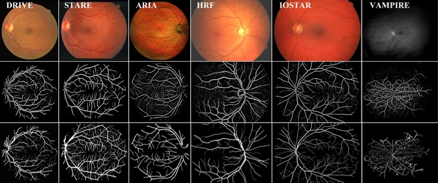
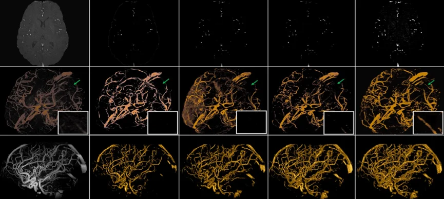

近日，慈溪医工所智能医学图像处理课题组（iMED中国）的赵一天春蕾副研究员在医学图像顶级期刊IEEE Transactions on Medical Imaging上发表科研论文：Automatic 2D/3D Vessel Enhancement in Multiple Modality Images Using a Weighted Symmetry Filter。此工作由赵一天副研究员及刘江高级研究员主导，并有多个国际团队配合，最终开发了一种对称滤波算法用于血管的增强及提取。此方法能适用于多种维度，多种模态的医疗图像当中，包括眼底彩照，眼底造影成像（FA），核磁造影(MRA)，CT造影（CTA）等，突破医疗图像领域内对血管提取不精准、图像模态遍历性差等问题。
IEEE Transactions on Medical Imaging由电气电子工程师学会（IEEE）出版，每年接收文章200篇左右，是国际医学影像研究领域的权威期刊。

图1：开发算法在6个眼科图像数据库中的测试结果

图2：开发算法MRA脑血管图像中的测试结果
赵一天副研究员自2017年6月加入慈溪医工所，是中国科协青年人才托举工程获得者。现兼任英国利物浦大学荣誉讲师，北京理工大学光电学院兼职副研究员，Scientific Reports副主编。 主要研究方向是虚拟现实与增强现实，计算机视觉，模式识别，三维建模与可视化，人工智能，以及多学科交叉研究。近几年围绕精准医疗研究，开展了眼科疾病以及脑血管疾病的计算机辅助诊断研究。在国内外学术刊物和国际学术会议上发表论文40余篇，其中第一作者SCI/EI论文23篇。其中一篇会议论文获得第七届国际图像与信号处理会议的最佳论文奖，另外一篇论文入选医疗图像顶级期刊IEEE Transactions on Medical Imaging 2015年度Top 2 Most Frequently Downloaded Paper，此外还有多篇论文入选ESI高被引用论文。
编辑：谢建洋
医工所 iMED中国团队